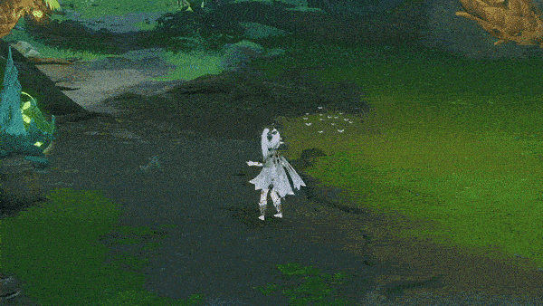
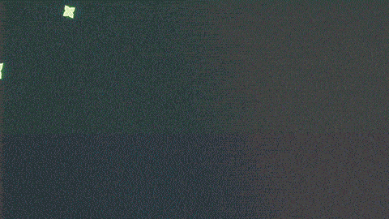

纳西妲 - 战斗天赋
普通攻击·行相
普通攻击
对前方进行至多四段的攻击，造成草元素伤害。
重击
消耗一定体力，短暂咏唱后，对前方区域造成草元素范围伤害。
下落攻击
凝聚草元素的力量，从空中下坠冲击地面，攻击下落路径上的敌人，并在落地时造成草元素范围伤害。

所闻遍计
在身边施以草木之业缚，造成草元素范围伤害，并对命中的至多8名敌人施加蕴种印。
长按时将以不同的方式施放。
长按
进入瞄准状态，以选定一定范围内一定数量的敌人，并在该状态下提高纳西妲的抗打断能力。
长按结束时，对选定的敌人造成草元素伤害，并为其施加蕴种印。
瞄准状态至多持续5秒，至多选定8名敌人。
蕴种印
处于蕴种印状态下的敌人将在一定距离内互相连结。
对处于蕴种印状态下的敌人触发元素反应，以及在该敌人受到草原核（包含烈绽放、超绽放）造成的伤害后，纳西妲将基于攻击力与元素精通，对该敌人及其所处连结中的所有敌人释放灭净三业，造成草元素伤害。
短时间内至多触发一次灭净三业。
草木之神既已于空藏中照见诸法实相，乃可究尽三际因缘起灭之机。
心景幻成
将梦想的殿堂具现，展开「摩耶之殿」领域。
领域展开时，队伍中若存在以下元素类型的角色，将分别产生对应的效果：
·火元素：当纳西妲处于摩耶之殿当中时，提升元素战技「所闻遍计」的灭净三业造成的伤害；
·雷元素：当纳西妲处于摩耶之殿当中时，降低元素战技「所闻遍计」的灭净三业触发的间隔时间；
·水元素：延长摩耶之殿的持续时间。
展开领域时，若上述元素类型的角色数量有至少2名，产生的对应效果将进一步增强。
纳西妲即使处于队伍后台，只要该队伍处于摩耶之殿当中，依旧能获得上述效果的提升。
在智慧之神的眼中，或许森罗万象也不过是颠倒幻成的摩耶之梦。
